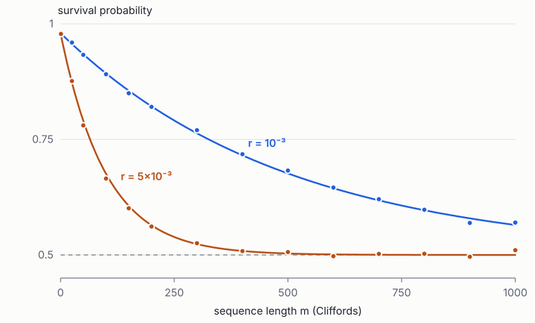
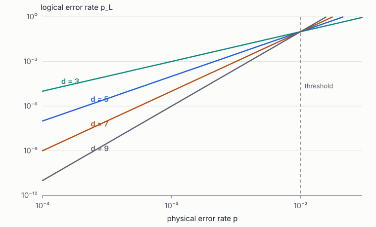

Foundations of Quantum Engineering · Book 4 of 7
Quantum Information and Computation
Gates and circuits, entanglement, algorithms, noise and benchmarking, quantum error correction and the hardware stack
How to use this book
Book 3 described what a single quantum system does. This book asks what can be computed with many of them, and what it costs to make the computation reliable. It is organised in three parts. Chapters 1–4 develop the circuit model, entanglement as a resource and the main algorithms, so that you know what a quantum computer is for and how large it must be. Chapter 5 turns to imperfection: how gate errors are modelled, measured and compared. Chapters 6–7 develop quantum error correction from the repetition code to the surface code, which converts a requirement on a computation into a requirement on physical error rates and qubit counts. Chapter 8 follows a program down the stack to pulses, which is where the hardware of Book 6 begins.
Error correction is the bridge between this course and the review it prepares you for. The review's single most important figure of merit, the logical error suppression factor \(\Lambda\), is defined in Chapter 7 here; its dependence on fabrication is the subject of the review's §9. Read Chapters 5–7 carefully.
Prerequisites: Book 3, especially Chapters 2, 5, 7 and 8 (measurement, qubit rotations, density matrices and channels). The standard reference for this material is Nielsen and Chuang [1]; Preskill's lecture notes are an excellent free companion [2].
1 Qubits, gates and circuits
Goals
- Say precisely what a qubit is, how it differs from a classical bit, and how to write one down.
- Apply the standard single-qubit gates by hand, as matrices and as rotations of the Bloch sphere.
- Use the two-qubit gates CNOT, CZ, SWAP and iSWAP, and convert between them.
- Read and draw quantum circuit diagrams, including measurement and classical control.
- Explain what "universal gate set" means, why Clifford + T is the standard choice, and what hardware must provide (the DiVincenzo criteria).
A classical computer stores information in bits that are 0 or 1 and changes them with logic gates such as AND and NOT. A quantum computer stores information in qubits, which can be in a superposition of 0 and 1, and changes them with quantum gates, which are rotations of that superposition. A program is a circuit: a list of gates applied in order, ending with measurements that turn the quantum state back into ordinary bits. Everything else in this book (algorithms, noise, error correction) is built from the vocabulary of this chapter, so it is worth going slowly.
1.1 From bits to qubits
A classical bit is a physical system with two distinguishable states, such as a capacitor charged or discharged. At any moment it is in exactly one of them. If we are unsure which, we describe our ignorance with probabilities \(p_0\) and \(p_1 = 1-p_0\), but the bit itself is still definitely one or the other.
A qubit also has two distinguishable states, written \(\ket0\) and \(\ket1\). These could be the two lowest energy levels of a superconducting circuit, two levels of an atom, or a photon in one of two waveguides (Books 5 and 6). The new ingredient, explained in Book 3, is that the qubit can also be in any superposition
As a column vector, \(\ket\psi = \begin{pmatrix}\alpha\\ \beta\end{pmatrix}\), with \(\ket0 = \begin{pmatrix}1\\0\end{pmatrix}\) and \(\ket1 = \begin{pmatrix}0\\1\end{pmatrix}\). The numbers \(\alpha\) and \(\beta\) are amplitudes. Measuring the qubit "in the computational basis" gives 0 with probability \(|\alpha|^2\) and 1 with probability \(|\beta|^2\), and afterwards the qubit is left in the state that was found.
A superposition is not "secretly 0 or 1, we just don't know which". The state \((\ket0+\ket1)/\sqrt2\) and a coin that is 0 or 1 with probability ½ give the same statistics if you only ever measure 0-versus-1. They differ as soon as you rotate before measuring: the superposition can be rotated to give 0 with certainty, the coin cannot. Book 3, Book 3 §2.5, works through this example. The difference is the phase relationship between \(\alpha\) and \(\beta\), and quantum algorithms exploit exactly that.
Two practical facts follow from the formula. First, one qubit does not store two numbers you can read out: a measurement gives one bit, then the superposition is gone. Second, the amplitudes are continuous, so a qubit can be wrong by a small amount. That is why noise and error correction (Chapters 5–7) are so central.
1.2 Picturing one qubit: the Bloch sphere
Because only relative phases are observable (multiplying the whole state by \(\ee^{\ii\chi}\) changes nothing), any qubit state can be written
\[ \ket\psi = \cos\tfrac\theta2\ket0 + \ee^{\ii\phi}\sin\tfrac\theta2\ket1 , \]which is a point on a sphere at polar angle \(\theta\) and azimuth \(\phi\): the Bloch sphere (Book 3 eq. (3)). Keep this map in your head:
- North pole: \(\ket0\). South pole: \(\ket1\).
- On the equator, the equal superpositions: \(\ket+ = (\ket0+\ket1)/\sqrt2\) on the \(+x\) axis, \(\ket- = (\ket0-\ket1)/\sqrt2\) on \(-x\), \(\ket{\pm\ii} = (\ket0\pm\ii\ket1)/\sqrt2\) on \(\pm y\).
- Opposite points are orthogonal states (perfectly distinguishable).
Single-qubit gates, as we are about to see, are just rotations of this sphere. That one picture is worth more than any amount of matrix algebra for building intuition.
1.3 Single-qubit gates
A quantum gate on one qubit is a \(2\times2\) unitary matrix \(U\) (one with \(U^\dagger U = I\); see Book 1 §3.2). Unitarity is required because the output must still have total probability one, and because quantum evolution between measurements is reversible. Here are the gates you will meet constantly, each with what it does to the basis states and on the sphere.
| Gate | Matrix | Action on basis | Bloch-sphere picture |
|---|---|---|---|
| Pauli \(X\) ("NOT") | \(\begin{pmatrix}0&1\\1&0\end{pmatrix}\) | \(\ket0\leftrightarrow\ket1\) | Half-turn (\(\pi\)) about \(x\) |
| Pauli \(Z\) | \(\begin{pmatrix}1&0\\0&-1\end{pmatrix}\) | \(\ket0\to\ket0\), \(\ket1\to-\ket1\) | Half-turn about \(z\) |
| Pauli \(Y\) | \(\begin{pmatrix}0&-\ii\\ \ii&0\end{pmatrix}\) | \(\ket0\to\ii\ket1\), \(\ket1\to-\ii\ket0\) | Half-turn about \(y\) |
| Hadamard \(H\) | \(\frac1{\sqrt2}\begin{pmatrix}1&1\\1&-1\end{pmatrix}\) | \(\ket0\to\ket+\), \(\ket1\to\ket-\) | Half-turn about the axis between \(x\) and \(z\) |
| Phase \(S\) | \(\begin{pmatrix}1&0\\0&\ii\end{pmatrix}\) | \(\ket1\to\ii\ket1\) | Quarter-turn (\(\pi/2\)) about \(z\) |
| \(T\) | \(\begin{pmatrix}1&0\\0&\ee^{\ii\pi/4}\end{pmatrix}\) | \(\ket1\to\ee^{\ii\pi/4}\ket1\) | Eighth-turn (\(\pi/4\)) about \(z\) |
Worked example: applying gates by hand. Start in \(\ket0\), apply \(H\), then \(Z\), then \(H\) again. What comes out?
Step 1: \(H\ket0 = \frac1{\sqrt2}\begin{pmatrix}1&1\\1&-1\end{pmatrix}\begin{pmatrix}1\\0\end{pmatrix} = \frac1{\sqrt2}\begin{pmatrix}1\\1\end{pmatrix} = \ket+\).
Step 2: \(Z\ket+ = \frac1{\sqrt2}\begin{pmatrix}1\\-1\end{pmatrix} = \ket-\). The amplitudes have the same size; only the sign (a phase) of \(\ket1\) changed. A 0/1 measurement now would still give 50:50.
Step 3: \(H\ket- = \frac1{2}\begin{pmatrix}1&1\\1&-1\end{pmatrix}\begin{pmatrix}1\\-1\end{pmatrix} = \frac12\begin{pmatrix}0\\2\end{pmatrix} = \ket1\).
So \(HZH\ket0 = \ket1\): the invisible phase flip became a visible bit flip. In fact \(HZH = X\) as matrices (Exercise 1). On the sphere: \(H\) moves north pole to \(+x\), \(Z\) rotates \(+x\) to \(-x\), \(H\) moves \(-x\) to the south pole. This "Hadamard sandwich" turns phase information into measurable bit information, and it is the core trick of almost every quantum algorithm.
More generally, a rotation by angle \(\theta\) about an axis \(\hat n\) is (Book 1 eq. (18))
Every single-qubit gate equals some \(R_{\hat n}(\theta)\) up to a global phase, and every rotation can be built from rotations about two fixed axes, for example \(U = \ee^{\ii\alpha}R_z(\beta)R_y(\gamma)R_z(\delta)\) ("Euler angles"). Hardware uses this: a superconducting processor typically has a calibrated \(\pi/2\) pulse about \(x\) and implements \(R_z\) for free by shifting the phase of later pulses (Book 3 §5.3). Any single-qubit gate is then a short sequence of those two.
What does \(S\) do to \(\ket+\)? And what does \(SS\) equal?
Answer
\(S\ket+ = (\ket0+\ii\ket1)/\sqrt2 = \ket{+\ii}\): a quarter-turn about \(z\) moves \(+x\) to \(+y\). \(SS = \mathrm{diag}(1, \ii^2) = Z\): two quarter-turns make a half-turn.
1.4 Several qubits
Two qubits have four basis states \(\ket{00},\ket{01},\ket{10},\ket{11}\), and a general state is a superposition of all four with four amplitudes. Three qubits have eight; \(n\) qubits have \(2^n\). Mathematically this is the tensor product of Book 1, Chapter 4: \(\ket{01} = \ket0\otimes\ket1\), and a gate \(U\) on the first qubit alone is \(U\otimes I\). We list the first qubit first, so \(\ket{10}\) means "first qubit 1, second qubit 0". (Some software, such as Qiskit, uses the opposite order; always check.)
Applying a single-qubit gate to each qubit separately can never correlate them. For that we need gates that act on two qubits jointly.
1.5 Two-qubit gates
The controlled-NOT (CNOT) has a control and a target qubit. It flips the target if, and only if, the control is \(\ket1\): \(\ket{c,t}\to\ket{c,\ t\oplus c}\), where \(\oplus\) is addition modulo 2 (XOR). Writing out all four cases makes this concrete:
\[ \ket{00}\to\ket{00},\quad \ket{01}\to\ket{01},\quad \ket{10}\to\ket{11},\quad \ket{11}\to\ket{10}. \]On basis states it is just the classical reversible XOR. Its power appears on superpositions. Take the control in \(\ket+\) and the target in \(\ket0\):
\[ \mathrm{CNOT}\,\frac{\ket0+\ket1}{\sqrt2}\ket0 = \frac{\mathrm{CNOT}\ket{00} + \mathrm{CNOT}\ket{10}}{\sqrt2} = \frac{\ket{00}+\ket{11}}{\sqrt2} . \](We used linearity: a gate acts on each term of a superposition separately.) The result is the Bell state \(\ket{\Phi^+}\). It is entangled: it cannot be written as (state of qubit 1) ⊗ (state of qubit 2) (Book 1 §4.3). Measuring either qubit gives a random bit, but the two bits always agree. Creating entanglement is the job of two-qubit gates; no amount of single-qubit gates can do it.
Other two-qubit gates you will meet:
- Controlled-Z (CZ) multiplies \(\ket{11}\) by \(-1\) and leaves the rest. It is symmetric (no difference between control and target) and is what many superconducting and neutral-atom machines do natively. The last formula above, which is the Hadamard sandwich again on the target, turns it into a CNOT.
- SWAP exchanges the two qubits' states: \(\ket{01}\leftrightarrow\ket{10}\). It costs three CNOTs.
- iSWAP does \(\ket{01}\to\ii\ket{10}\), \(\ket{10}\to\ii\ket{01}\). It arises naturally when two qubits with the same frequency are coupled: energy sloshes from one to the other, exactly as between two coupled pendulums (Book 1 §5.5, Book 3 §6.2).
Each hardware platform has one natural ("native") entangling gate (CZ, iSWAP, cross-resonance, Mølmer–Sørensen, Book 6), and any of them, combined with single-qubit gates, can make any other.
What does CZ do to \(\ket+\ket+\)? Is the result entangled?
Answer
\(\ket+\ket+ = \tfrac12(\ket{00}+\ket{01}+\ket{10}+\ket{11})\), and CZ flips the sign of the last term: \(\tfrac12(\ket{00}+\ket{01}+\ket{10}-\ket{11})\). Its coefficient matrix \(\tfrac12\begin{pmatrix}1&1\\1&-1\end{pmatrix}\) has nonzero determinant, so yes, it is entangled (it is a two-qubit "cluster state", which reappears in Book 5).
1.6 Circuit diagrams
Quantum programs are drawn as circuit diagrams. Learn to read them as you would read a musical score:
- Each horizontal line is one qubit; time runs from left to right. Qubits usually start in \(\ket0\).
- A box with a letter (\(H\), \(X\), \(R_z(\theta)\)) is a single-qubit gate on that line.
- A filled dot on one line joined by a vertical line to \(\oplus\) on another is a CNOT (dot = control, \(\oplus\) = target). Two dots joined is a CZ.
- A meter symbol is a measurement in the \(0/1\) basis; after it, the line becomes a double line, meaning a classical bit.
- A gate attached to a double line is applied only if that classical bit is 1: classical feed-forward.
The Bell-state circuit is therefore: two lines, an \(H\) on the first, then a CNOT from first to second, then two meters. Reading circuits right to left as matrix products is a common source of errors: the gate drawn first (leftmost) acts first, so its matrix is the rightmost factor. The circuit "\(A\) then \(B\)" is the matrix \(BA\).
Two identities are used by compilers all the time, and are worth checking once by hand. A CNOT with Hadamards on both qubits before and after is a CNOT with control and target swapped. And Pauli errors move through CNOTs in a fixed pattern: an \(X\) on the control before a CNOT becomes \(X\) on both qubits after it; a \(Z\) on the target becomes \(Z\) on both. That second rule is how a single error spreads through an error-correction circuit, and Chapter 6 builds on it.
Measuring in the middle of a circuit can always be postponed to the end (the "principle of deferred measurement"), so mid-circuit measurement adds no computing power in principle. In practice it is essential: error correction measures helper qubits over and over while the computation runs, and needs fast, accurate readout and reset.
1.7 Universality: which gates are enough?
Classically, NAND alone can build any logic function. The quantum analogue is a universal gate set: a set of gates from which any unitary on any number of qubits can be approximated as accurately as we like.
- All single-qubit rotations plus CNOT are universal, even exactly. But a generic unitary on \(n\) qubits needs about \(4^n\) gates, so only special unitaries (the ones useful algorithms use) can be built efficiently.
- A finite universal set is needed for error correction, because only finitely many operations can be protected. The standard choice is Clifford + T. The Clifford gates are those generated by \(H\), \(S\) and CNOT; they map Pauli operators to Pauli operators. Adding the single non-Clifford gate \(T\) makes the set universal.
How many \(T\) gates does it take to approximate an arbitrary rotation to accuracy \(\epsilon\)? The Solovay–Kitaev theorem guaranteed a count growing only like a power of \(\log(1/\epsilon)\); modern methods achieve about \(3\log_2(1/\epsilon)\). For \(\epsilon = 10^{-10}\), that is about 100 \(T\) gates per rotation.
Why does the \(T\) gate matter so much? Circuits made only of Clifford gates, however large, can be simulated efficiently on an ordinary computer (the Gottesman–Knill theorem, Chapter 6). So all of a quantum computer's potential advantage over classical machines lives in its non-Clifford gates. In a fault-tolerant machine the \(T\) gates are also by far the most expensive operations (Chapter 7), so the "\(T\)-count" of an algorithm is a good first estimate of its cost.
1.8 What hardware must provide
In 2000 David DiVincenzo listed what any physical platform needs to be a quantum computer [3]. They read like a specification sheet:
- Scalable, well-characterised qubits. You must know exactly what your two levels are, and be able to make many.
- Initialisation. You must be able to reset every qubit to \(\ket0\) reliably.
- Long coherence compared with gate time. The superposition must survive many gates.
- A universal set of gates.
- Qubit-specific measurement.
Two more apply to communication: converting between stationary qubits and "flying" ones (photons), and sending flying qubits faithfully. Every platform in Books 5 and 6 can be scored against this list. Almost every problem in the review that this course prepares for, from frequency crowding to wiring, is a threat to item 1: "scalable".
A gate is the contract between hardware and software. Its specification (which unitary, how fast, at what error) is what a chip design must deliver. In the review, each gate's error \(\varepsilon_i\) is written as a function of the chip's physical parameters and coherence (Lab to Foundry eq. (37)); that function is how chip design reaches all the way up to algorithm performance.
- A qubit is \(\alpha\ket0+\beta\ket1\); measurement gives 0 or 1 with probabilities \(|\alpha|^2, |\beta|^2\) and destroys the superposition.
- Single-qubit gates are rotations of the Bloch sphere; \(H\) swaps the \(x\) and \(z\) axes and converts phase information into bit information.
- Two-qubit gates (CNOT, CZ, iSWAP) are needed to create entanglement; they convert into one another with single-qubit gates.
- Circuits are read left to right; the matrix of "A then B" is \(BA\).
- Clifford + T is the standard universal set; \(T\) gates carry the quantum advantage and the cost.
Exercises
- Show by matrix multiplication that \(HXH = Z\), \(HZH = X\) and \(HYH = -Y\).
Solution
For example \(HZ = \frac1{\sqrt2}\begin{pmatrix}1&-1\\1&1\end{pmatrix}\), and multiplying by \(H\) on the right gives \(\frac12\begin{pmatrix}0&2\\2&0\end{pmatrix} = X\). The others are similar. Geometrically, \(H\) is a half-turn about the axis \((\hat x+\hat z)/\sqrt2\), which swaps the \(x\) and \(z\) axes and reverses \(y\).
- Verify \(\mathrm{CNOT} = (I\otimes H)\,\mathrm{CZ}\,(I\otimes H)\) by following \(\ket{10}\) through the right-hand side.
Solution
\((I\otimes H)\ket{10} = \ket1\ket+\). CZ applies \(Z\) to the second qubit because the first is 1: \(\ket1\ket-\). Then \(I\otimes H\) gives \(\ket1\ket1\). So \(\ket{10}\to\ket{11}\), as CNOT does. If the first qubit is 0, CZ does nothing and \(H\cdot H = I\), so the target is unchanged.
- Compute \(\mathrm{CNOT}(H\otimes I)\ket{01}\). Which Bell state is it?
Solution
\((H\otimes I)\ket{01} = \tfrac{1}{\sqrt2}(\ket{01}+\ket{11})\). CNOT flips the second bit when the first is 1: \(\tfrac{1}{\sqrt2}(\ket{01}+\ket{10}) = \ket{\Psi^+}\).
- Show that \(T\) is not a Clifford gate by computing \(TXT^\dagger\).
Solution
\(TXT^\dagger = \begin{pmatrix}0&\ee^{-\ii\pi/4}\\ \ee^{\ii\pi/4}&0\end{pmatrix} = (X+Y)/\sqrt2\). This is not a single Pauli (times a phase), so \(T\) does not map Paulis to Paulis.
- A circuit applies \(R_x(\pi/2)\), then \(R_z(\pi)\), then \(R_x(\pi/2)\) to \(\ket0\). Use the Bloch sphere to find the output without matrices.
Solution
\(R_x(\pi/2)\) rotates the north pole a quarter-turn about \(x\), to the \(-y\) axis. \(R_z(\pi)\) turns \(-y\) into \(+y\). \(R_x(\pi/2)\) takes \(+y\) a further quarter-turn about \(x\), to the north pole. The output is \(\ket0\) again (up to a global phase).
- Explain in one paragraph, without equations, why a computer made only of single-qubit gates could never be more powerful than a classical computer.
Solution
With only single-qubit gates, the qubits never become entangled, so the state is always a product of \(n\) separate qubit states. Each can be stored as two complex numbers, so the whole state needs only \(2n\) numbers, and each gate updates just two of them. A classical computer can follow this exactly and cheaply. Quantum advantage requires entanglement, which requires two-qubit gates.
2 Entanglement as a resource: no-cloning, teleportation and networks
Goals
- Understand what entanglement is operationally: correlations that no pre-arranged classical recipe can produce.
- Prove the no-cloning theorem and see why it forces quantum error correction to work differently from classical.
- Follow quantum teleportation and superdense coding step by step, line by line.
- Understand Bell measurements and entanglement swapping, and why they matter for modular and photonic machines.
Entanglement is not only a strange feature of quantum mechanics; it is a resource, like energy or bandwidth, that can be created, stored, moved and spent. Two people who share an entangled pair of qubits can do things that are impossible with any amount of classical communication alone, such as move an unknown quantum state from one place to another (teleportation). At the same time, quantum information cannot be copied (no-cloning). These two facts shape everything from error correction to how future quantum computers will be linked together.
2.1 What entanglement does
Recall from Chapter 1 that \(\mathrm{CNOT}(H\otimes I)\ket{00} = \ket{\Phi^+} = (\ket{00}+\ket{11})/\sqrt2\). Give one qubit to Alice and one to Bob, and let them walk apart. Each measures in the \(0/1\) basis. By the Born rule, the outcomes are 00 with probability ½ and 11 with probability ½: each sees a perfectly random bit, but the bits always agree.
So far this looks like two envelopes each containing the same randomly chosen card. The difference appears when they measure in other bases. If both measure in the \(\pm\) basis instead, they again get random but equal results, because \(\ket{\Phi^+}\) can also be written \((\ket{++}+\ket{--})/\sqrt2\) (Exercise 1). Envelopes would need to have pre-agreed answers for every possible question in advance, and Bell's theorem (Book 3 §7.4) shows that no such list can reproduce the quantum correlations for all choices of measurement. Entanglement is a correlation that exists only as a property of the pair, not of each qubit separately.
Entanglement does not let Alice send a message to Bob faster than light. Whatever Alice does to her qubit, Bob's own measurement results, viewed alone, stay 50:50 random. The correlation only becomes visible when they later compare notes over an ordinary (light-speed or slower) channel. Mathematically, Alice's operations cannot change Bob's reduced density matrix (Book 3 §7.3).
2.2 No cloning
A classical bit can be copied: read it and write it twice. Copying is how classical memories, networks and error-correcting codes work. Could a quantum machine copy an unknown qubit state? Suppose a unitary \(U\) did so for every state:
\[ U\ket\psi\ket0 = \ket\psi\ket\psi \quad\text{and}\quad U\ket\phi\ket0 = \ket\phi\ket\phi . \]Take the inner product of the left sides and of the right sides. Unitaries preserve inner products, so the left gives \(\braket\phi\psi\braket00 = \braket\phi\psi\), and the right gives \(\braket\phi\psi^2\). Hence \(\braket\phi\psi = \braket\phi\psi^2\), which forces \(\braket\phi\psi = 0\) or \(1\): the two states are either identical or orthogonal. A copier works only for a fixed set of mutually orthogonal states (that is, for classical bits) and fails for general superpositions [4]. The argument extends to measurements and any physical process, not only unitaries.
Consequences you will meet again:
- Error correction cannot work by copying. The quantum repetition code of Chapter 6 does not make three copies of a state; it spreads one state into an entangled state of three qubits.
- Quantum signals cannot be amplified. A classical repeater regenerates a weak signal; a quantum one would need to copy, so long-distance quantum communication needs entanglement swapping instead (below).
- Unknown states cannot be fully measured from one copy. If they could, you could prepare copies from the measurement result.
2.3 The Bell basis and Bell measurements
The four maximally entangled states
\[ \ket{\Phi^\pm} = \frac{\ket{00}\pm\ket{11}}{\sqrt2}, \qquad \ket{\Psi^\pm} = \frac{\ket{01}\pm\ket{10}}{\sqrt2} \]are orthonormal, so they form a basis of two qubits, the Bell basis. A Bell measurement asks which of the four a pair is in. It is done by running the Bell-state circuit backwards: a CNOT, then a Hadamard on the first qubit, then measure both in the \(0/1\) basis. The two bits identify the Bell state: \(\Phi^+\to00\), \(\Psi^+\to01\), \(\Phi^-\to10\), \(\Psi^-\to11\) (Exercise 2).
2.4 Teleportation, step by step
Alice holds a qubit in an unknown state \(\ket\psi = \alpha\ket0+\beta\ket1\). She cannot measure it (that would destroy it and give one bit), and she cannot copy it. She and Bob share a Bell pair \(\ket{\Phi^+}\). Can she transfer \(\ket\psi\) to Bob by sending only classical bits? Yes [5].
Step 1: write the three-qubit state. Label the qubits 1 (Alice's unknown state), 2 (Alice's half of the pair), 3 (Bob's half):
\[ \ket\psi_1\ket{\Phi^+}_{23} = \frac{1}{\sqrt2}\big(\alpha\ket0_1+\beta\ket1_1\big)\big(\ket{00}_{23} + \ket{11}_{23}\big) = \frac{1}{\sqrt2}\big(\alpha\ket{000} + \alpha\ket{011} + \beta\ket{100} + \beta\ket{111}\big). \]Step 2: rewrite qubits 1 and 2 in the Bell basis. Use \(\ket{00} = (\ket{\Phi^+}+\ket{\Phi^-})/\sqrt2\), \(\ket{11} = (\ket{\Phi^+}-\ket{\Phi^-})/\sqrt2\), \(\ket{01} = (\ket{\Psi^+}+\ket{\Psi^-})/\sqrt2\), \(\ket{10} = (\ket{\Psi^+}-\ket{\Psi^-})/\sqrt2\). Substituting and collecting terms (Exercise 3 walks through it) gives exactly
with the first ket of each term describing qubits 1 and 2 and the second describing Bob's qubit 3. Nothing has physically happened yet; this is the same state written differently. But it shows that Bob's qubit already "contains" \(\ket\psi\), scrambled by one of four known operations.
Step 3: Alice makes a Bell measurement on qubits 1 and 2. Each of the four outcomes has probability \((1/2)^2 = 1/4\), independent of \(\alpha,\beta\), so the outcome reveals nothing about the state. After the measurement, Bob's qubit is in \(\ket\psi\), \(Z\ket\psi\), \(X\ket\psi\) or \(XZ\ket\psi\).
Step 4: Alice phones Bob with her two bits, and Bob applies the matching correction (\(I\), \(Z\), \(X\) or \(ZX\) — the inverse of the scrambling, which here is the same operators applied in reverse order). Bob now holds exactly \(\ket\psi\).
Check the paradoxes. No-cloning is safe: Alice's original was destroyed by her measurement. Nothing went faster than light: Bob's qubit is useless until the classical bits arrive. And nothing magical crossed the room: two classical bits plus one pre-shared Bell pair were consumed to move one qubit. That accounting, "2 bits + 1 ebit → 1 qubit", is why entanglement is called a resource.
2.5 Superdense coding
Now the reverse trade. Alice and Bob share \(\ket{\Phi^+}\). Alice applies one of \(I, X, Z, XZ\) to her qubit, turning the pair into one of the four Bell states (Exercise 4), and mails her single qubit to Bob. Bob performs a Bell measurement on the two qubits and learns which of four operations she applied: two classical bits from one transmitted qubit. "1 qubit + 1 ebit → 2 bits". Without the pre-shared pair, one qubit can carry at most one bit of retrievable information (Holevo's bound).
2.6 Entanglement swapping and quantum networks
Suppose Alice–Bob share one Bell pair and Bob–Charlie share another. Bob holds two qubits, one from each pair. If he performs a Bell measurement on his two qubits and announces the result, Alice's and Charlie's qubits end up in a known Bell state, although they never interacted. This is entanglement swapping: teleportation applied to half of an entangled pair. Chains of swaps, together with "purification" that distils a few good pairs from many noisy ones, are the principle of quantum repeaters, which extend entanglement over distances where direct transmission would lose almost every photon.
The same idea links quantum computers. If two chips (or two refrigerators, or two ion traps) can share Bell pairs, created by emitting photons and doing a Bell measurement on them in the middle, then a gate between qubits on different chips can be performed by teleportation. Modular roadmaps across the industry depend on this, and the rate and fidelity of Bell-pair generation between modules becomes a hardware specification just like a gate error.
Linear optics cannot do a complete Bell measurement. With only beam splitters, phase shifters and photon detectors, at most two of the four Bell states of two photons can be told apart, so a linear-optical Bell measurement succeeds with probability at most 50%. This single fact shapes photonic quantum computing: computation must be organised around probabilistic "fusion" measurements and redundancy (Book 5, Book 5 §7).
Teleportation is not just a demonstration. Fault-tolerant machines use it to perform the expensive \(T\) gate ("gate teleportation" with magic states, Chapter 7), and modular machines use it to connect chips. Both make Bell-pair fidelity and measurement-plus-feed-forward latency into design parameters.
- Entangled qubits have correlations that exist only for the pair; no pre-agreed classical recipe reproduces them, and they cannot be used to signal.
- Unknown quantum states cannot be copied; error correction and long-distance communication must work around this.
- Teleportation: 1 Bell pair + 2 classical bits move 1 qubit. Superdense coding: 1 Bell pair + 1 qubit carry 2 bits.
- Entanglement swapping extends entanglement across chains of links and lets separate modules act as one computer.
Exercises
- Show that \(\ket{\Phi^+} = (\ket{++}+\ket{--})/\sqrt2\).
Solution
\(\ket{++} = \tfrac12(\ket{00}+\ket{01}+\ket{10}+\ket{11})\) and \(\ket{--} = \tfrac12(\ket{00}-\ket{01}-\ket{10}+\ket{11})\). Their sum is \(\ket{00}+\ket{11}\); dividing by \(\sqrt2\) gives \(\ket{\Phi^+}\).
- Apply CNOT then \(H\otimes I\) to each Bell state and check the outcome table given in the text.
Solution
\(\ket{\Phi^+}\): CNOT gives \((\ket{00}+\ket{10})/\sqrt2 = \ket+\ket0\); \(H\) gives \(\ket{00}\). \(\ket{\Phi^-}\): CNOT gives \(\ket-\ket0\), then \(\ket{10}\). \(\ket{\Psi^+}\): CNOT gives \((\ket{01}+\ket{11})/\sqrt2 = \ket+\ket1\), then \(\ket{01}\). \(\ket{\Psi^-}\): \(\ket-\ket1\), then \(\ket{11}\).
- Verify the \(\ket{\Phi^+}\) and \(\ket{\Psi^-}\) terms of (4).
Solution
Project qubits 1,2 onto \(\bra{\Phi^+} = (\bra{00}+\bra{11})/\sqrt2\): from the expansion in Step 1, the terms with qubits 1,2 equal to 00 (\(\alpha\ket{000}\)) and 11 (\(\beta\ket{111}\)) survive, giving \(\tfrac{1}{\sqrt2}\cdot\tfrac{1}{\sqrt2}(\alpha\ket0+\beta\ket1) = \tfrac12\ket\psi\). For \(\bra{\Psi^-} = (\bra{01}-\bra{10})/\sqrt2\): the 01 term \(\alpha\ket{011}\) gives \(+\alpha\ket1\) and the 10 term \(\beta\ket{100}\) gives \(-\beta\ket0\), so \(\tfrac12(\alpha\ket1 - \beta\ket0) = \tfrac12XZ\ket\psi\), since \(XZ(\alpha\ket0+\beta\ket1) = X(\alpha\ket0-\beta\ket1) = \alpha\ket1 - \beta\ket0\).
- In superdense coding, Alice applies \(XZ\) to her qubit of \(\ket{\Phi^+}\). Which Bell state does Bob receive?
Solution
\((XZ\otimes I)\tfrac{1}{\sqrt2}(\ket{00}+\ket{11}) = \tfrac{1}{\sqrt2}(\ket{10} - \ket{01}) = -\ket{\Psi^-}\), which a Bell measurement identifies (the sign is a global phase).
- Prove that no unitary maps \(\ket\psi\ket0\to\ket\psi\ket\psi\) for both \(\ket0\) and \(\ket+\).
Solution
\(\braket{0}{+} = 1/\sqrt2\), but cloning would require \(\braket0+ = \braket0+^2 = 1/2\). Contradiction.
- A repeater chain has 4 links. Each link's Bell pair is ready with probability 0.1 per attempt, independently. Why is it essential to store pairs in quantum memory while waiting for the others, rather than requiring all links to succeed in the same attempt?
Solution
Without memory, all four must succeed together: probability \(10^{-4}\) per attempt. With memory, each link keeps trying until it succeeds and then waits; the expected time is set by the slowest link, a few tens of attempts, not ten thousand. Memory turns a product of probabilities into a maximum of waiting times, which is why quantum memories with long coherence are central to networks.
3 Quantum algorithms I: interference, oracles and search
Goals
- Understand why "trying all inputs at once" is not, by itself, a speed-up, and why interference is.
- Build reversible oracles and use phase kickback to move answers into phases.
- Work through the Deutsch–Jozsa and Bernstein–Vazirani algorithms in full.
- Derive Grover's search algorithm with a two-dimensional geometric picture, and know when it is useful.
A quantum algorithm is a recipe for arranging interference. The computer is put into a superposition over many possibilities, a function is evaluated on all of them at once, and then gates are applied so that the amplitudes of wrong answers cancel and the amplitudes of right answers add up. A measurement then finds a right answer with high probability. Popular descriptions say a quantum computer "tries every answer in parallel"; the important half of the sentence they leave out is "and then makes the wrong answers interfere away". This chapter shows how on three problems small enough to follow line by line.
3.1 Functions as quantum gates
Many algorithms are stated in terms of a function \(f\) that takes an \(n\)-bit input \(x\) and returns one bit, \(f(x)\in\{0,1\}\). We treat \(f\) as a black box (an oracle) and count how many times we must call it. Quantum gates must be reversible, but \(f\) generally is not (you cannot recover \(x\) from one bit). The standard fix keeps the input and writes the answer into an extra qubit with XOR:
Applying \(U_f\) twice undoes it (\(y\oplus f\oplus f = y\)), so it is reversible and, as a permutation of basis states, unitary. Any classical circuit for \(f\) can be converted into such a quantum circuit with modest overhead, using Toffoli gates (controlled-controlled-NOT) and extra "scratch" qubits that are cleaned up afterwards.
3.2 Parallelism alone gives nothing
Put \(n\) qubits through Hadamards: \(H^{\otimes n}\ket{0\dots0} = 2^{-n/2}\sum_x\ket x\), an equal superposition of all \(2^n\) inputs (Exercise 1). Apply \(U_f\) once:
\[ U_f\,\frac{1}{2^{n/2}}\sum_x\ket x\ket0 = \frac{1}{2^{n/2}}\sum_x\ket x\ket{f(x)} . \]All \(2^n\) values of \(f\) now sit in one state. But measuring returns a single random \(x\) and its \(f(x)\): exactly what evaluating \(f\) at a random input classically would give. The information is there, but measurement only lets us extract one sample. To gain anything, we must make the many terms interfere so that a global property of \(f\) shows up in the probabilities.
3.3 Phase kickback
Interference acts on phases, so it helps to put the answer into a phase rather than into a qubit's value. Prepare the extra qubit in \(\ket- = (\ket0-\ket1)/\sqrt2\). Then
\[ U_f\ket x\ket- = \ket x\,\frac{\ket{f(x)} - \ket{1\oplus f(x)}}{\sqrt2} = (-1)^{f(x)}\ket x\ket- . \](If \(f(x) = 0\), nothing changes; if \(f(x) = 1\), the two terms swap, which flips the sign.) The extra qubit is unchanged and can be ignored; the input register has acquired a phase \((-1)^{f(x)}\). This trick, phase kickback, is used in almost every algorithm. From now on we write the phase oracle as \(O_f\ket x = (-1)^{f(x)}\ket x\).
3.4 Deutsch–Jozsa: constant or balanced in one query
Problem. \(f\) is promised to be either constant (the same output for every input) or balanced (0 for exactly half the inputs, 1 for the other half). Which is it? A deterministic classical algorithm may need \(2^{n-1}+1\) queries in the worst case: if the first half of the inputs you check all give 0, the function could still be either.
Quantum algorithm. (1) Start in \(\ket{0}^{\otimes n}\); apply \(H^{\otimes n}\). (2) Apply the phase oracle once. (3) Apply \(H^{\otimes n}\) again. (4) Measure. Follow the state:
\[ \ket{0\dots0} \xrightarrow{H^{\otimes n}} \frac{1}{2^{n/2}}\sum_x\ket x \xrightarrow{O_f} \frac{1}{2^{n/2}}\sum_x(-1)^{f(x)}\ket x \xrightarrow{H^{\otimes n}} \sum_z\Big[\frac{1}{2^n}\sum_x(-1)^{f(x) + x\cdot z}\Big]\ket z , \]using the identity \(H^{\otimes n}\ket x = 2^{-n/2}\sum_z(-1)^{x\cdot z}\ket z\), where \(x\cdot z\) is the bitwise dot product mod 2 (Exercise 2). The amplitude of the all-zeros outcome \(z = 0\dots0\) is
If \(f\) is constant, every term has the same sign and they add to \(\pm1\): we see all zeros with certainty. If balanced, half the terms are \(+1\) and half \(-1\), and they cancel exactly: we never see all zeros. One query decides. This is the clearest illustration of the "parallelism + interference" recipe.
Deutsch–Jozsa's advantage is real but narrow. A randomised classical algorithm that checks a few random inputs answers correctly with high probability (if it ever sees both 0 and 1, the function is balanced). The problem is a teaching example, not a useful application. Its value is that it shows the structure that real algorithms share.
3.5 Bernstein–Vazirani: a hidden string in one query
Suppose \(f(x) = s\cdot x \bmod 2\) for an unknown \(n\)-bit string \(s\). Classically, each query reveals one bit of information about \(s\), so \(n\) queries are needed (query \(x = 100\dots0\) to get \(s_1\), and so on). The same circuit as Deutsch–Jozsa finds \(s\) in one query: after the oracle the register holds \(2^{-n/2}\sum_x(-1)^{s\cdot x}\ket x\), which is exactly \(H^{\otimes n}\ket s\), so the final Hadamards return \(\ket s\). The \(H^{\otimes n}\) transform is the Fourier transform over bit strings, and the lesson generalises: an oracle that writes a periodic pattern into phases, followed by a Fourier transform, concentrates amplitude on the period. Shor's algorithm (Chapter 4) is this idea with the ordinary Fourier transform.
3.6 Grover's search
Problem. Among \(N = 2^n\) items, exactly one, \(w\), is marked: \(f(w) = 1\) and \(f(x) = 0\) otherwise. Find \(w\). With no structure to exploit, a classical search checks items one by one, on average \(N/2\) queries. Grover's algorithm [6] needs about \(\tfrac\pi4\sqrt N\).
The two reflections. Start in the uniform superposition \(\ket s = N^{-1/2}\sum_x\ket x\). Repeat the following pair of operations:
- Oracle \(O = I - 2\ketbra ww\): flips the sign of the marked item's amplitude and leaves the rest. (This is the phase oracle.)
- Diffusion \(D = 2\ketbra ss - I\): reflects every amplitude about the average amplitude. Implemented as \(H^{\otimes n}\,(2\ketbra{0}{0} - I)\,H^{\otimes n}\), a handful of gates.
Worked example: the amplitudes, \(N = 4\). Start: all four amplitudes are \(\tfrac12\). Oracle (say \(w = 2\)): amplitudes \((\tfrac12, \tfrac12, -\tfrac12, \tfrac12)\). Their average is \(\tfrac14\). Reflect each about \(\tfrac14\) (new value = \(2\times\tfrac14 - \) old value): \((0, 0, 1, 0)\). After one iteration the marked item has amplitude 1. Measuring finds it with certainty, using one oracle call instead of an average of 2.25 classically (Exercise 4).
The geometric picture. All the action happens in a plane spanned by two vectors: \(\ket w\) and \(\ket{s'}\), the uniform superposition of the \(N-1\) unmarked items. The starting state \(\ket s\) lies in this plane at a small angle \(\theta/2\) from \(\ket{s'}\), with \(\sin(\theta/2) = \braket ws = 1/\sqrt N\). The oracle reflects about \(\ket{s'}\) (it flips the \(\ket w\) component), and the diffusion reflects about \(\ket s\). Two reflections about lines at angle \(\theta/2\) compose into a rotation by \(\theta\) (a fact from plane geometry). So each iteration rotates the state by \(\theta\) towards \(\ket w\), and after \(k\) iterations the angle from \(\ket{s'}\) is \((2k+1)\theta/2\):
To reach \(\Pr\approx1\), the angle must be about \(\pi/2\), so \(k\theta\approx\pi/2\), and since \(\theta\approx2/\sqrt N\), \(k\approx\tfrac\pi4\sqrt N\). Stopping early leaves the state short of \(\ket w\); iterating too long rotates past it and the success probability drops again. That is unlike classical search, where more effort never hurts.
The \(\sqrt N\) speed-up is provably the best possible for unstructured search: no quantum algorithm can do better. Its generalisation, amplitude amplification, boosts the success probability of any quantum subroutine quadratically faster than classical repetition, and appears inside many larger algorithms.
Why quadratic speed-ups are fragile in practice. A fault-tolerant logical operation is roughly a thousand to ten thousand times slower than a classical processor operation, and each oracle call may contain thousands of logical gates. A \(\sqrt N\) advantage pays off only for very large \(N\). Analyses suggest that quadratic speed-ups alone are unlikely to give practical advantage on early fault-tolerant machines; the exponential speed-ups of the next chapter are what drive industry roadmaps.
- Evaluating \(f\) on a superposition of all inputs is easy; extracting useful information requires interference.
- Phase kickback converts \(f(x)\) into a sign \((-1)^{f(x)}\), which can interfere.
- Deutsch–Jozsa and Bernstein–Vazirani: Hadamard, phase oracle, Hadamard; a Fourier transform concentrates amplitude on a global property of \(f\).
- Grover search rotates the state towards the answer by a fixed angle per query: \(\tfrac\pi4\sqrt N\) queries instead of \(N/2\), and no better is possible.
Exercises
- Show that \(H\otimes H\ket{00} = \tfrac12(\ket{00}+\ket{01}+\ket{10}+\ket{11})\).
Solution
\(H\ket0\otimes H\ket0 = \tfrac{1}{\sqrt2}(\ket0+\ket1)\otimes\tfrac{1}{\sqrt2}(\ket0+\ket1)\); expanding the product gives the four terms with coefficient ½.
- Prove \(H\ket x = \tfrac{1}{\sqrt2}\sum_{z\in\{0,1\}}(-1)^{xz}\ket z\) for one qubit, and deduce the \(n\)-qubit formula.
Solution
For \(x = 0\): \((\ket0+\ket1)/\sqrt2\), all signs \(+\). For \(x = 1\): \((\ket0-\ket1)/\sqrt2\), sign \((-1)^{z}\). Both match \((-1)^{xz}\). For \(n\) qubits, the tensor product multiplies the signs: \(\prod_i(-1)^{x_iz_i} = (-1)^{x\cdot z}\).
- For \(n = 1\) (Deutsch's problem), list the four functions \(f:\{0,1\}\to\{0,1\}\) and show the circuit distinguishes constant from balanced with one query.
Solution
\(f = 0\), \(f = 1\) (constant), \(f(x) = x\), \(f(x) = 1-x\) (balanced). The amplitude of \(\ket0\) at the end is \(\tfrac12[(-1)^{f(0)}+(-1)^{f(1)}]\): \(\pm1\) for constant, 0 for balanced.
- Classically, how many queries on average does it take to find the marked item among 4, checking items in random order and stopping when found (the last item need not be checked)?
Solution
Found on query 1, 2 or 3 with probabilities ¼, ¼, ¼; if the first three are unmarked (probability ¼) we know it is the fourth after 3 queries. Average \(= \tfrac14(1+2+3+3) = 2.25\).
- For \(N = 2^{40}\), estimate the optimal number of Grover iterations and compare with the classical average.
Solution
\(\tfrac\pi4\sqrt{2^{40}} = \tfrac\pi4\times2^{20}\approx8.2\times10^5\) versus \(2^{39}\approx5.5\times10^{11}\).
- For \(N = 8\), what is the success probability after one, two and three iterations? Which is best?
Solution
\(\sin(\theta/2) = 1/\sqrt8\), \(\theta/2 = 0.3614\) rad. \(k=1\): \(\sin^2(3\times0.3614) = \sin^2(1.084) = 0.781\). \(k=2\): \(\sin^2(1.807) = 0.945\). \(k=3\): \(\sin^2(2.530) = 0.330\). Two iterations are best; the third overshoots.
4 Quantum algorithms II: Fourier transform, phase estimation, factoring and simulation
Goals
- Build the quantum Fourier transform from Hadamards and controlled phases.
- Understand phase estimation, the subroutine behind most exponential speed-ups.
- Follow Shor's factoring algorithm at the level of its structure and cost.
- Understand Hamiltonian simulation by Trotterisation, variational algorithms, and how resource estimates are made.
4.1 The quantum Fourier transform
The discrete Fourier transform of Book 1 (Book 1 eq. (33)), normalised to be unitary, acts on basis states of \(n\) qubits (\(N = 2^n\)) as
The product form shows that each output qubit carries one binary digit of \(j\) in its phase. A circuit of \(n\) Hadamards and \(n(n-1)/2\) controlled phase rotations \(R_k = \mathrm{diag}(1, \ee^{2\pi\ii/2^k})\) implements it, compared with \(O(n2^n)\) operations for the classical FFT on a vector of length \(2^n\). The catch is the same as always: the QFT transforms amplitudes, which cannot be read out. It is useful only as a step inside an algorithm whose output after the QFT is concentrated on a few outcomes. Small rotations \(R_k\) with \(k\gtrsim\log_2(n/\epsilon)\) can be dropped with error \(\epsilon\) (the approximate QFT).
4.2 Phase estimation
Given a unitary \(U\) and one of its eigenvectors, \(U\ket u = \ee^{2\pi\ii\varphi}\ket u\), phase estimation finds \(\varphi\) to \(t\) bits. Prepare \(t\) ancillas in \(\ket+\), apply controlled-\(U^{2^k}\) from ancilla \(k\) to the register holding \(\ket u\). By phase kickback, ancilla \(k\) acquires the phase \(\ee^{2\pi\ii\,2^k\varphi}\), so the ancilla register is exactly in the product state of (8) with \(j/2^t\) replaced by \(\varphi\). An inverse QFT then yields the binary expansion of \(\varphi\). Precision \(2^{-t}\) costs about \(2^t\) applications of \(U\), the "Heisenberg scaling" that also underlies quantum-enhanced metrology. Phase estimation is how quantum computers find energies of molecules (with \(U = \ee^{-\ii Ht}\)) and periods of functions.
4.3 Shor's algorithm
Factoring an integer \(N\) reduces, by classical number theory, to finding the order \(r\) of a random \(a\) modulo \(N\): the smallest \(r\) with \(a^r\equiv1 \pmod N\). If \(r\) is even, \(\gcd(a^{r/2}\pm1, N)\) is likely to be a nontrivial factor. The unitary \(U\ket y = \ket{ay\bmod N}\) has eigenvalues \(\ee^{2\pi\ii s/r}\), so phase estimation on \(U\) returns \(s/r\) for random \(s\), and continued fractions recover \(r\) [7]. The quantum cost is dominated by modular exponentiation, implemented with reversible arithmetic circuits of \(O(n^3)\) gates for an \(n\)-bit number (with faster variants). Classically, the best known algorithm (the number field sieve) takes time \(\exp(O(n^{1/3}\log^{2/3}n))\). This exponential separation is why factoring RSA-2048 is the benchmark of fault-tolerant roadmaps.
Resource estimates translate an algorithm into hardware requirements. An influential 2021 analysis estimated that factoring a 2048-bit RSA key would take about 8 hours on 20 million noisy physical qubits with \(10^{-3}\) error rates and a surface code [8]; refinements published since have reduced the qubit count substantially, to under a million in a 2025 estimate cited in the review [9]. These numbers are only as good as their assumptions about physical error rates, code cycle time and connectivity, all of which are hardware properties. That is the link from algorithms to the review's §9.
4.4 Hamiltonian simulation
Feynman's original motivation for quantum computers was simulating quantum systems, whose state vectors grow exponentially (Book 1 §4.4). For a Hamiltonian that is a sum of local terms, \(H = \sum_jH_j\), the Trotter–Suzuki product formula approximates evolution by alternating short evolutions under each term [10]:
The error comes from the non-commuting terms, through the Baker–Campbell–Hausdorff formula (Book 1 eq. (19)). Each factor is a small circuit. Applications in chemistry and materials (catalysts, battery materials, high-temperature superconductors) are among the most credible uses of fault-tolerant machines, typically needing hundreds to thousands of logical qubits and \(10^8\)–\(10^{12}\) \(T\) gates.
4.5 Variational and near-term algorithms
Without error correction, circuits must be short. Variational algorithms use a parametrised circuit \(U(\boldsymbol\theta)\) to prepare a trial state, estimate a cost such as \(\expval{H}\) by repeated measurement, and let a classical optimiser update \(\boldsymbol\theta\) (the variational quantum eigensolver [11]; QAOA for optimisation). They are a quantum application of the variational principle (Book 3 §6.6). Their difficulties are instructive for engineers: the number of measurements needed to estimate gradients to useful precision is large, noise biases the cost, and for many circuit families gradients vanish exponentially with size ("barren plateaus"). The industry consensus by 2026 is that useful advantage requires error correction, which is what the rest of this book addresses.
Resource estimation closes the loop from application to hardware: a target algorithm fixes a logical error budget and a logical qubit count; the code and decoder fix the physical error rate and qubit count required (Lab to Foundry eq. (36)); and the physical error rate is fixed by the chip's design and fabrication. A quantum EDA system can be judged by how well it predicts the inputs to that chain before a chip is made.
Exercises
- Write the QFT on one qubit and on two qubits as matrices.
Solution
One qubit: \(H\). Two qubits (\(N=4\), \(\omega = \ii\)): \(\tfrac12\begin{pmatrix}1&1&1&1\\1&\ii&-1&-\ii\\1&-1&1&-1\\1&-\ii&-1&\ii\end{pmatrix}\).
- Find the order of \(a = 7\) modulo \(N = 15\) and use it to factor 15.
Solution
\(7^1 = 7\), \(7^2 = 49\equiv4\), \(7^3\equiv28\equiv13\), \(7^4\equiv91\equiv1\). So \(r = 4\), \(a^{r/2} = 49\equiv4\). \(\gcd(3, 15) = 3\) and \(\gcd(5, 15) = 5\).
- For two terms with \(\|[H_1,H_2]\| = 1\) (in units where \(\hbar=1\)) and \(t = 10\), how many Trotter steps give error below \(10^{-3}\) with the first-order formula (taking the constant as \(\tfrac12\))?
Solution
Error \(\approx\tfrac12 t^2/r = 50/r \lt 10^{-3}\) requires \(r>5\times10^4\). Higher-order formulas reduce this dramatically, which is why they are used.
5 Noise, fidelity and benchmarking
Goals
- Model gate errors as quantum channels, and reduce them to Pauli channels by twirling.
- Define process fidelity, average gate fidelity and their relation, and estimate coherence-limited gate fidelity.
- Understand tomography and why it does not scale, and how randomised benchmarking does.
- Know the error types that matter beyond the simple model: coherent errors, leakage, crosstalk and correlated errors.
5.1 Gate errors as channels
A real gate implements not the ideal unitary \(U\) but a channel \(\tilde{\mathcal U}\). It is convenient to write \(\tilde{\mathcal U} = \mathcal E\circ\mathcal U\): the ideal gate followed by an error channel \(\mathcal E\) (Book 3 eq. (34)). A general error channel on \(n\) qubits has \(16^n - 4^n\) real parameters, too many to measure or use. The Pauli channel is the workhorse simplification:
a random Pauli applied with probabilities \(p_P\). The depolarising channel is the special case with all non-identity Paulis equally likely. Any channel can be converted into a Pauli channel with the same average fidelity by Pauli twirling: surround the gate with random Paulis (and their compensating Paulis afterwards). Twirling is used in experiments (randomised compiling) and justifies Pauli models in error-correction simulations, which is crucial because Pauli errors on Clifford circuits can be simulated efficiently (Chapter 6).
For a qubit with relaxation and dephasing during a gate of duration \(t_g\), twirling the amplitude- and phase-damping channels gives approximately
(for \(t_g\ll T_1, T_2\); the last expression uses \(1/T_2 = 1/2T_1 + 1/T_\varphi\)). A 25 ns single-qubit gate with \(T_1 = T_\varphi = 100\) µs has a coherence limit of about \(1.7\times10^{-4}\); a 60 ns two-qubit gate on two such qubits about \(8\times10^{-4}\). These coherence limits are the first line of the error budget in the review (Lab to Foundry eq. (37)).
5.2 Measures of gate quality
The average gate fidelity of an implemented channel \(\tilde{\mathcal U}\) to the target \(U\) is \(\bar F = \int\dd\psi\,\bra\psi U^\dagger\tilde{\mathcal U}(\ketbra\psi\psi)U\ket\psi\), averaged over all pure input states. The process (entanglement) fidelity \(F_e\) is the fidelity of the Choi state of the channel, and for a Pauli channel it is simply \(p_I\). They are related by
The error rate \(r = 1 - \bar F\) is the number most often quoted. For error correction, though, the average hides what matters: a coherent over-rotation by angle \(\epsilon\) has infidelity of order \(\epsilon^2\), but repeated \(N\) times in phase it builds up to \(N^2\epsilon^2\), while stochastic errors build up only as \(N\epsilon^2\). The worst-case measure, the diamond norm distance, can be as large as \(\sqrt{r}\) for coherent errors. Twirling converts coherent into stochastic errors, which is one reason it is used.
5.3 Tomography
State tomography reconstructs \(\rho\) from measurements in a complete set of bases; process tomography reconstructs a channel from tomography of its outputs for a complete set of inputs. Both need a number of measurement settings exponential in \(n\), and both mix up the errors of the gate under test with the errors of state preparation and measurement (SPAM). They are used for one and two qubits, mostly for diagnosis.
5.4 Randomised benchmarking
Randomised benchmarking (RB) [12] avoids both problems. Apply a random sequence of \(m\) Clifford gates, followed by the single Clifford that inverts the whole sequence, and measure the probability \(F(m)\) of returning to the initial state. Averaging over random sequences twirls the noise into a depolarising channel with parameter \(p\) per gate, and
SPAM errors only affect \(A\) and \(B\), not the decay rate, so \(r\) is a clean per-gate error (Lab to Foundry eq. (29)). Interleaved RB inserts a specific gate between the random Cliffords and compares decay rates to extract that gate's error. Cross-entropy benchmarking uses random non-Clifford circuits and compares measured output distributions with ideal ones; it was used in the 2019 "supremacy" experiment. Simultaneous RB on many qubits at once exposes crosstalk. Figure 1 shows a typical RB decay.

5.5 Errors the simple models miss
- Leakage: a transmon has levels above \(\ket1\). Population that leaks into \(\ket2\) is outside the qubit space; it is not a Pauli error, it persists, and it spreads to neighbours through two-qubit gates. Error-correction schemes add "leakage reduction units" to pump it back.
- Crosstalk: control of one qubit disturbs another, through stray couplings, shared lines or residual \(ZZ\) interaction (Lab to Foundry eq. (7)). It makes errors depend on what neighbours are doing.
- Correlated errors: a cosmic ray or radioactive decay deposits energy in the substrate and creates quasiparticles that cause errors on many qubits at once for milliseconds. Correlated errors are particularly damaging to error correction, which assumes independence (Lab to Foundry §9.4).
- Drift and non-stationarity: two-level systems move in frequency, so a qubit's \(T_1\) and frequency change over hours. A benchmark is a snapshot.
Benchmarks are the measured outputs that a predictive design flow must reproduce. The review's proposed die record (Lab to Foundry §11.1) links each chip's layout and fabrication data with its measured RB error rates, coherence and crosstalk, so that models can be trained and validated against them.
Exercises
- A single-qubit depolarising channel with \(p_X = p_Y = p_Z = 10^{-4}\). What are \(F_e\) and \(\bar F\)?
Solution
\(F_e = p_I = 1 - 3\times10^{-4}\). \(\bar F = (2F_e+1)/3 = 1 - 2\times10^{-4}\). The error rate \(r = 2\times10^{-4}\).
- Estimate the coherence-limited error of a 40 ns CZ gate between two qubits each with \(T_1 = 150\) µs and \(T_\varphi = 200\) µs, using (11) per qubit and adding.
Solution
Per qubit: \(\tfrac{40\,\mathrm{ns}}{3}(1/150 + 1/200)\,\mu\mathrm s^{-1} = 13.3\times0.01167\times10^{-3}\approx1.56\times10^{-4}\). Two qubits: about \(3.1\times10^{-4}\). (For two-qubit gates the prefactor differs slightly because the average is over a 4-dimensional space; this is an estimate.)
- An RB experiment fits \(p = 0.9985\) per Clifford on one qubit. What is \(r\)? If a Clifford averages 1.875 physical gates, what is the error per physical gate?
Solution
\(r = (1 - p)/2 = 7.5\times10^{-4}\). Per gate \(\approx7.5\times10^{-4}/1.875 = 4\times10^{-4}\).
- A gate over-rotates by \(\epsilon = 0.01\) rad. What is its infidelity, and what is the error after 100 repetitions if the errors add coherently?
Solution
Infidelity of a rotation error \(\epsilon\) is about \(\epsilon^2/6\) on average for a qubit (\(\approx1.7\times10^{-5}\)). After 100 coherent repetitions the angle error is 1 rad, infidelity of order \(1/6\) or more: far worse than \(100\times1.7\times10^{-5} = 1.7\times10^{-3}\) for stochastic errors.
6 Quantum error correction I: codes and stabilisers
Goals
- See how the repetition code protects against bit flips without measuring the encoded information.
- Understand why correcting \(X\) and \(Z\) errors is enough to correct any error (discretisation).
- Use the stabiliser formalism: stabiliser groups, logical operators, syndromes and code parameters \([[n,k,d]]\).
- Know the Shor and Steane codes, the Knill–Laflamme conditions and the Gottesman–Knill theorem.
6.1 The repetition code, quantum style
Classically, one protects a bit against flips by sending three copies and taking a majority vote. Quantum mechanically we cannot copy (§2.2) and must not measure the data. Instead, encode \(\alpha\ket0+\beta\ket1\mapsto\alpha\ket{000}+\beta\ket{111}\) with two CNOTs. This is not three copies of the state; it is an entangled state in a two-dimensional subspace (the code space) of the eight-dimensional space. A bit flip on qubit 1 gives \(\alpha\ket{100}+\beta\ket{011}\). To detect it without learning \(\alpha,\beta\), measure the parities \(Z_1Z_2\) and \(Z_2Z_3\). Both code states have parities \((+1,+1)\); a flip on qubit 1 gives \((-1,+1)\), on qubit 2 \((-1,-1)\), on qubit 3 \((+1,-1)\). The parity outcomes, the syndrome, identify the error but carry no information about \(\alpha,\beta\), so the superposition survives. Apply \(X\) to the identified qubit and the state is restored. Parities are measured with an ancilla qubit and two CNOTs, then the ancilla is measured: this syndrome extraction circuit is the elementary operation of every error-correcting quantum computer.
If each qubit flips independently with probability \(p\), the code fails only when two or more flip: \(p_L = 3p^2 - 2p^3\), better than \(p\) when \(p \lt 1/2\). With \(n = 2t+1\) qubits it corrects \(t\) flips and \(p_L\sim p^{t+1}\). This exponential suppression with code size, below a threshold, is the whole point.
6.2 Discretisation of errors
Quantum errors are continuous: a small rotation, a partial relaxation. Yet it suffices to correct a discrete set. Any single-qubit error operator can be expanded in Paulis, \(E = e_0I + e_xX + e_yY + e_zZ\). The syndrome measurement projects the erroneous state onto one term of this expansion, so after measurement the error is one of \(I, X, Y, Z\), and correcting it fixes the state. Since \(Y = \ii XZ\), a code that corrects arbitrary \(X\) and \(Z\) errors on any \(t\) qubits corrects every error on \(t\) qubits. This is why the Pauli error models of Chapter 5 are not just convenient but natural.
The repetition code above corrects \(X\) but is defenceless against \(Z\): a phase flip on any qubit changes \(\alpha\ket{000}+\beta\ket{111}\) to \(\alpha\ket{000}-\beta\ket{111}\), which is a valid code state. In the \(\ket\pm\) basis the roles swap, giving a phase-flip code. Shor concatenated the two: encode in the phase-flip code, then encode each of those three qubits in the bit-flip code, giving the 9-qubit Shor code, the first code that corrects an arbitrary single-qubit error [13].
6.3 The stabiliser formalism
Describing codes by their states becomes unwieldy. Gottesman's insight [14] was to describe them by the operators that leave them unchanged. A stabiliser group \(\mathcal S\) is an abelian group of \(n\)-qubit Pauli operators not containing \(-I\). The code space is
If \(\mathcal S\) has \(n-k\) independent generators, \(\mathcal C\) has dimension \(2^k\): it encodes \(k\) logical qubits. For the bit-flip code, \(\mathcal S = \langle Z_1Z_2, Z_2Z_3\rangle\), \(n=3\), \(k=1\).
- Syndromes. A Pauli error \(E\) either commutes or anticommutes with each generator \(S_j\). If it anticommutes, \(S_jE\ket\psi = -E\ket\psi\), so measuring \(S_j\) gives \(-1\). The pattern of signs is the syndrome.
- Logical operators. Paulis that commute with every stabiliser but are not themselves in \(\mathcal S\) map the code space to itself nontrivially: they are logical operations, \(\bar X\) and \(\bar Z\). For the bit-flip code \(\bar X = X_1X_2X_3\), \(\bar Z = Z_1\) (or any \(Z_i\)).
- Distance. The code distance \(d\) is the minimum weight (number of non-identity factors) of a logical operator. A code with distance \(d\) detects any error of weight below \(d\) and corrects any of weight up to \(\lfloor(d-1)/2\rfloor\). Codes are labelled \([[n,k,d]]\).
The 7-qubit Steane code [15], \([[7,1,3]]\), built from the classical Hamming code, has three \(X\)-type and three \(Z\)-type generators of weight 4, and the useful property that \(H\), \(S\) and CNOT act transversally (qubit by qubit), so these logical gates cannot spread a single error into two. The general condition for a code to correct a set of errors \(\{E_a\}\) is the Knill–Laflamme condition [16]: \(\bra{\bar i}E_a^\dagger E_b\ket{\bar j} = c_{ab}\delta_{ij}\) for code basis states \(\ket{\bar i}\). Errors must not distinguish between, or mix, logical states.
6.4 Clifford circuits are classically simulable
Clifford gates map Paulis to Paulis under conjugation. A stabiliser state on \(n\) qubits is described by \(n\) generators, each a string of \(n\) Paulis plus a sign, i.e. \(O(n^2)\) bits. A Clifford gate updates the generators in \(O(n)\) time and a Pauli measurement in \(O(n^2)\). This is the Gottesman–Knill theorem: circuits of Clifford gates, Pauli measurements and Pauli noise can be simulated efficiently on a classical computer. It means that error-correction circuits, which are almost entirely Clifford, can be simulated for thousands of qubits and billions of shots. Google's Stim simulator does exactly this, and it is the computational core of the review's proposed design-to-logical-error pipeline (Lab to Foundry §9.4). It also means that Clifford gates alone give no quantum advantage: the \(T\) gate is essential.
A code is a wiring diagram. Each stabiliser generator is a parity measurement among specific qubits, implemented by an ancilla and CNOTs, so the code fixes which qubits must be coupled and how often. Choosing a code chooses the chip's connectivity (Lab to Foundry §9.2). That is why error correction is part of chip design, not only of software.
Exercises
- For the bit-flip code, compute the syndrome of \(X_1X_2\). What correction does the decoder apply, and what is the result?
Solution
\(X_1X_2\) anticommutes with \(Z_2Z_3\) only (it commutes with \(Z_1Z_2\)): syndrome \((+1,-1)\), which points to a flip on qubit 3. Applying \(X_3\) leaves \(X_1X_2X_3 = \bar X\): a logical error. Weight-2 errors defeat a distance-3 code.
- Show that \(Z_1\) and \(X_1X_2X_3\) commute with both generators of the bit-flip code and anticommute with each other.
Solution
\(Z_1\) commutes with all \(Z\)-type operators. \(X_1X_2X_3\) overlaps each \(Z_iZ_j\) on two qubits, giving two sign flips, so it commutes. \(Z_1\) and \(X_1X_2X_3\) overlap on one qubit and anticommute, as logical \(\bar Z\) and \(\bar X\) must.
- Compute \(p_L\) for the three-qubit code at \(p = 10^{-2}\) and \(p = 10^{-3}\). By how much does going to five qubits help at \(p=10^{-3}\)?
Solution
\(3p^2-2p^3\): \(2.98\times10^{-4}\) and \(3.0\times10^{-6}\). Five qubits fail with three or more flips: \(\approx\binom53p^3 = 10^{-8}\), a 300-fold improvement.
- How many independent stabiliser generators does a \([[n,k,d]]\) code have? Check for the Steane code.
Solution
\(n-k\). Steane: \(7-1 = 6\) (three \(X\)-type, three \(Z\)-type).
7 Quantum error correction II: the surface code and fault tolerance
Goals
- Understand the surface code: its layout, stabilisers, logical operators and syndrome-extraction cycle.
- Know how decoders work, why they must be fast, and what a detector error model is.
- Understand thresholds, the suppression factor \(\Lambda\), and how they set qubit overheads.
- See how logical gates are performed (lattice surgery, magic states) and where qLDPC codes fit.
7.1 The surface code
Arrange \(d\times d\) data qubits on a square grid, and place an ancilla on each face of the grid between four data qubits (and on some boundary edges between two). Faces alternate, like a chessboard, between \(X\)-type stabilisers \(X\!X\!X\!X\) and \(Z\)-type stabilisers \(Z\!Z\!Z\!Z\) on the four surrounding data qubits [17, 18]. Neighbouring \(X\) and \(Z\) stabilisers share two qubits, so they commute. This is the rotated surface code, \([[d^2, 1, d]]\), using \(d^2\) data and \(d^2-1\) ancilla qubits, \(2d^2-1\) in all. Its logical \(\bar Z\) is a chain of \(Z\)s across the patch from one boundary to the opposite one, and \(\bar X\) a chain of \(X\)s in the other direction; both have weight \(d\).
Its attractions are engineering ones. Every stabiliser involves only nearest neighbours on a planar grid, so a chip needs only local couplers in two dimensions. Each qubit couples to at most four others. And the threshold (below) is high, around 1% for circuit-level noise. Its drawback is overhead: one logical qubit costs \(2d^2-1\) physical qubits, hundreds to thousands at useful distances.
7.2 The syndrome-extraction cycle
One QEC cycle measures every stabiliser once: reset ancillas, apply Hadamards to \(X\)-type ancillas, four rounds of CNOT (or CZ) gates in a carefully chosen order that avoids "hook" errors reducing the distance, Hadamards again, and measure all ancillas. On superconducting hardware a cycle takes about 1 µs, dominated by readout. Because measurements themselves can be wrong, a single cycle's syndrome cannot be trusted. Instead one compares each stabiliser's result with its result in the previous cycle; a change is a detection event. A data error creates a pair of detection events in space (on the two neighbouring stabilisers); a measurement error creates a pair in time (the same stabiliser in consecutive cycles). Errors are thus edges in a three-dimensional space-time graph, and detection events are their endpoints.
7.3 Decoders
The decoder takes the detection events and guesses which errors occurred, or rather, which equivalence class of errors, since only the class (whether a logical operator was applied) matters. For the surface code with independent errors, the most likely explanation is a minimum-weight set of edges pairing up the detection events: minimum-weight perfect matching (MWPM), solved by Edmonds' blossom algorithm. Union-find decoders are faster and slightly less accurate; neural-network decoders trained on device data can be more accurate because they learn correlated noise. The decoder's inputs are not just the syndrome but a detector error model: the list of possible error mechanisms, the detection events each triggers, the logical observables each flips, and their probabilities. That model is generated from a noisy circuit by a Clifford simulator such as Stim (Chapter 6).
Decoding must keep up in real time: syndromes arrive every microsecond, and if the decoder falls behind, the backlog grows without bound (and non-Clifford gates, which need decoded results to proceed, stall). Real-time decoding for hundreds of logical qubits is a hardware co-design problem in its own right (Lab to Foundry §9.3).
7.4 Threshold and the suppression factor
If physical errors are independent with rate \(p\), a distance-\(d\) code fails when roughly \((d+1)/2\) errors line up along a logical path. Counting such paths gives the scaling law
Below the threshold \(p_{\mathrm{th}}\) (about 1% for the surface code with circuit-level depolarising noise and MWPM), increasing the distance suppresses logical errors exponentially, by a factor \(\Lambda\) for each step \(d\to d+2\). Above it, larger codes are worse (Figure 2). The suppression factor \(\Lambda\) is the single most important figure of merit of an error-corrected processor: it decides the distance, and hence the qubit count, needed for a target logical error rate. Google's Willow processor reported \(\Lambda\approx2.1\) in 2024–25 (Lab to Foundry eq. (35)); the review shows that raising \(\Lambda\) from about 2 to 4 cuts the physical qubits per logical qubit by more than half.

Thresholds assume independent errors. Correlated errors (cosmic rays, leakage, crosstalk) can create long error chains that the decoder does not expect, and can flatten the exponential suppression at low \(p_L\). Establishing that a chip's error model is close enough to independent that \(\Lambda\) keeps holding at large \(d\) is one of the hardest verification problems in the field.
7.5 Fault-tolerant logic
Storing information is not enough; one must compute on encoded qubits without letting errors spread. A procedure is fault tolerant if a single fault anywhere causes at most a correctable error in each code block. The threshold theorem states that with fault-tolerant procedures and \(p \lt p_{\mathrm{th}}\), arbitrarily long computations are possible with polylogarithmic overhead.
- Clifford gates on surface codes are done by lattice surgery: merging and splitting patches by measuring joint stabilisers along their boundaries, which implements logical parity measurements such as \(\bar Z\bar Z\) and hence CNOT. Each operation takes about \(d\) cycles.
- The \(T\) gate cannot be done transversally in the surface code (no code has a transversal universal gate set). Instead, noisy copies of the "magic state" \(T\ket+\) are prepared and purified by magic-state distillation [19], then consumed by gate teleportation (§2.4). Distillation "factories" can occupy a large fraction of a fault-tolerant machine, and the \(T\)-count of an algorithm is its dominant cost.
7.6 Beyond the surface code
The surface code encodes one logical qubit per patch, so its rate \(k/n\) tends to zero. Quantum low-density parity-check (qLDPC) codes encode many logical qubits per block with comparable distance, for example IBM's bivariate bicycle "gross" code \([[144,12,12]]\), which stores 12 logical qubits in 288 physical qubits where the surface code would need about 3,000 [20]. The price is non-local connectivity: each qubit must couple to some distant ones, which needs long-range couplers or multi-layer wiring on a superconducting chip, or atom shuttling in neutral-atom arrays. Bosonic codes (cat and GKP codes) instead encode a qubit in the many levels of an oscillator and are combined with simpler outer codes. The choice of code is therefore inseparable from the choice of hardware layout and fabrication technology, which is the review's point in Lab to Foundry §9.2.
The review's Problem 6 asks for the pipeline: layout and process statistics → device parameters → gate errors (Lab to Foundry eq. (37)) → detector error model → decoder → \(p_L\) and \(\Lambda\), including yield over the fabricated distribution (Lab to Foundry eq. (39)). Every arrow in that chain is a model you have now seen in outline. Building it with calibrated uncertainty is an open problem.
Exercises
- How many physical qubits does a distance-25 rotated surface code use? How many for 100 such logical qubits?
Solution
\(2\times625-1 = 1249\). For 100: about 125,000, before counting routing space and magic-state factories.
- With \(p = 2\times10^{-3}\), \(p_{\mathrm{th}} = 10^{-2}\) and \(A = 0.1\), what distance gives \(p_L \lt 10^{-12}\)?
Solution
\(\Lambda = 5\). Need \(0.1\times0.2^{(d+1)/2} \lt 10^{-12}\), i.e. \((d+1)/2 > \ln(10^{11})/\ln5 = 15.7\), so \((d+1)/2 = 16\), \(d = 31\).
- Why does a measurement error in one cycle produce two detection events?
Solution
A detection event compares a stabiliser's outcome with its previous value. A wrong outcome in cycle \(t\) differs from cycle \(t-1\) (event) and from cycle \(t+1\), where the correct value returns (second event). Both events are on the same stabiliser, separated in time.
- A processor improves its two-qubit error from 0.5% to 0.25% with threshold 1%. By how much does \(\Lambda\) change, and how does the distance needed for \(p_L = 10^{-9}\) change (take \(A = 0.1\))?
Solution
\(\Lambda\) goes from 2 to 4. Need \((d+1)/2 > \ln(10^8)/\ln\Lambda\): 26.6 → \(d = 53\) at \(\Lambda=2\); 13.3 → \(d = 27\) at \(\Lambda = 4\). Qubits per logical qubit fall from about 5,600 to about 1,460, nearly fourfold.
8 From program to pulses: the quantum computing stack
Goals
- Follow a quantum program through compilation: decomposition into native gates, mapping and routing onto hardware connectivity, and scheduling.
- Understand how gates become control pulses and how the control electronics and calibration loop work.
- See where the hardware constraints of Books 5–7 enter the software stack.
8.1 The layers
A quantum computer is a stack. At the top, an algorithm expressed as a circuit of abstract gates. Below it, a compiler that rewrites the circuit for a specific device. Then a pulse layer that turns each native gate into analogue waveforms, the control electronics that generate and digitise those waveforms, the cryogenic wiring that carries them, and the chip. For fault-tolerant machines, an error-correction layer sits between the algorithm and the physical gates: logical operations become lattice-surgery schedules, syndromes stream to real-time decoders, and corrections are tracked in software (the "Pauli frame") rather than applied physically.
8.2 Compilation
Compilation has three main steps.
- Decomposition into the device's native gate set, for example \(\{R_z(\theta), \sqrt X, \mathrm{CZ}\}\). Arbitrary two-qubit unitaries need at most three CNOT-equivalent gates (the KAK or Cartan decomposition), and single-qubit runs merge into one rotation.
- Mapping and routing. Logical circuit qubits are assigned to physical qubits, and because a two-qubit gate needs the two qubits to be coupled, SWAPs are inserted to bring interacting qubits together. Optimal routing is NP-hard; heuristics (such as SABRE) are used. On a square grid, routing can multiply the two-qubit gate count by a factor of several, which is a strong argument for higher connectivity or for codes and algorithms adapted to the grid.
- Scheduling and optimisation. Gates are scheduled in parallel where hardware allows, subject to crosstalk constraints (some neighbouring gates should not run simultaneously), and the compiler cancels redundant gates. Noise-aware compilers use per-qubit calibration data to prefer the best qubits and couplers.
The compiler therefore consumes a device model: the coupling graph, native gates, their durations and error rates, crosstalk restrictions and readout fidelities. That same model, predicted before fabrication, is what a design tool should output. Closing that loop (design tools producing the device model that compilers consume) is one of the integration opportunities identified in the review.
8.3 Gates become pulses
For a superconducting qubit, a single-qubit gate is a shaped microwave pulse of tens of nanoseconds at the qubit frequency, with Gaussian or cosine envelope plus a DRAG correction (Book 6); a two-qubit gate is a flux pulse on a coupler or a cross-resonance drive. Pulses are synthesised digitally at an intermediate frequency, converted by fast DACs, and mixed up to 4–8 GHz with a local oscillator (or synthesised directly by RF DACs). Readout is a pulse on a resonator, whose transmitted signal is amplified, mixed down, digitised and integrated to a single number per shot, then thresholded into "0" or "1". Every step adds distortion (filters, cable dispersion, mixer imbalance), which is calibrated and pre-compensated (Book 1 §6.4). Optimal control methods (GRAPE, Krotov, gradient-based pulse optimisation) search for pulse shapes that maximise gate fidelity under a model Hamiltonian, and depend on that model being accurate.
8.4 Calibration
Before a processor can run anything, every qubit's frequency, \(\pi\)-pulse amplitude, DRAG coefficient, readout frequency and discrimination threshold, and every two-qubit gate's parameters, must be measured and set. The experiments are those of Book 3 (Rabi, Ramsey, echo) and Chapter 5 (RB), organised as a dependency graph: you cannot calibrate a two-qubit gate before both single-qubit gates are good. Parameters drift as two-level systems move, so calibration is repeated, partly every few hours. For thousands of qubits, calibration time and robustness become system-level constraints, and a chip whose parameters land closer to design needs less of it (Lab to Foundry §7.3).
8.5 Control electronics and scaling
Today most systems use one or more coaxial lines per qubit from room-temperature electronics, which does not scale to a million qubits (Book 2, Book 2 §8.5). Paths forward include multiplexed readout (many resonators on one feedline, already standard), frequency-multiplexed drives, cryogenic CMOS controllers at 4 K, single-flux-quantum logic close to the chip, and photonic links that carry control signals optically into the refrigerator. Each moves complexity into the cryostat and adds heat and noise sources near the qubits, so system design becomes a joint optimisation of chip, package, wiring and electronics (Lab to Foundry §6.2).
Classical EDA succeeded because each layer of the stack consumed a well-defined model from the layer below: standard-cell libraries with timing, power and noise characterisation. The quantum stack lacks most of these interfaces. A compiler's device model, a decoder's detector error model and a pulse optimiser's Hamiltonian are all re-derived by hand from measurements today. A quantum PDK would supply them from design and process data.
Exercises
- A circuit needs CNOTs between qubits that are, on average, 3 hops apart on a grid. Roughly how many CNOTs does routing add per original CNOT if each SWAP costs 3 CNOTs and you swap one qubit along the path?
Solution
Two SWAPs bring the qubits adjacent (3 hops → 1), costing 6 CNOTs, plus the original: about 7 CNOTs, a sevenfold increase (less with clever routing and reuse of moved qubits).
- Calibrating one qubit takes 10 minutes of experiments, and each coupler 15 minutes. Estimate full calibration time for 1,000 qubits on a square grid if done sequentially, and argue why parallelism is limited.
Solution
About 2,000 couplers: \(1000\times10 + 2000\times15 = 40{,}000\) minutes, about 28 days. Parallel calibration is limited by crosstalk between simultaneous experiments and by shared control lines, so real systems use careful parallel scheduling and automated dependency graphs. This is why predictable fabrication, which reduces the search ranges, has system-level value.
References and further reading
Numbered in order of first citation in this book. Entries tagged “verify details” were compiled from memory; check volume and page before citing them.
- [1] M. A. Nielsen, I. L. Chuang, Quantum Computation and Quantum Information, 10th anniversary ed. (Cambridge University Press, 2010).
- [2] J. Preskill, Lecture Notes for Physics 229: Quantum Information and Computation (California Institute of Technology, 1998). theory.caltech.edu
- [3] D. P. DiVincenzo, “The physical implementation of quantum computation,” Fortschr. Phys. 48, 771 (2000).
- [4] W. K. Wootters, W. H. Zurek, “A single quantum cannot be cloned,” Nature 299, 802 (1982).
- [5] C. H. Bennett, G. Brassard, C. Crépeau et al., “Teleporting an unknown quantum state via dual classical and Einstein–Podolsky–Rosen channels,” Phys. Rev. Lett. 70, 1895 (1993).
- [6] L. K. Grover, “A fast quantum mechanical algorithm for database search,” in Proc. 28th ACM Symposium on Theory of Computing (1996).
- [7] P. W. Shor, “Polynomial-time algorithms for prime factorization and discrete logarithms on a quantum computer,” SIAM J. Comput. 26, 1484 (1997).
- [8] C. Gidney, M. Ekerå, “How to factor 2048 bit RSA integers in 8 hours using 20 million noisy qubits,” Quantum 5, 433 (2021).
- [9] C. Gidney, “How to factor 2048 bit RSA integers with less than a million noisy qubits”, arXiv:2505.15917 (2025).
- [10] S. Lloyd, “Universal quantum simulators,” Science 273, 1073 (1996).
- [11] A. Peruzzo, J. McClean, P. Shadbolt et al., “A variational eigenvalue solver on a photonic quantum processor,” Nat. Commun. 5, 4213 (2014).
- [12] E. Magesan, J. M. Gambetta, J. Emerson, “Scalable and robust randomized benchmarking of quantum processes,” Phys. Rev. Lett. 106, 180504 (2011).
- [13] P. W. Shor, “Scheme for reducing decoherence in quantum computer memory,” Phys. Rev. A 52, R2493 (1995).
- [14] D. Gottesman, “Stabilizer codes and quantum error correction (PhD thesis, Caltech)”, arXiv:quant-ph/9705052 (1997).
- [15] A. M. Steane, “Error correcting codes in quantum theory,” Phys. Rev. Lett. 77, 793 (1996).
- [16] E. Knill, R. Laflamme, “Theory of quantum error-correcting codes,” Phys. Rev. A 55, 900 (1997).
- [17] E. Dennis, A. Kitaev, A. Landahl, J. Preskill, “Topological quantum memory,” J. Math. Phys. 43, 4452 (2002).
- [18] A. G. Fowler, M. Mariantoni, J. M. Martinis, A. N. Cleland, “Surface codes: towards practical large-scale quantum computation,” Phys. Rev. A 86, 032324 (2012).
- [19] S. Bravyi, A. Kitaev, “Universal quantum computation with ideal Clifford gates and noisy ancillas,” Phys. Rev. A 71, 022316 (2005).
- [20] S. Bravyi, A. W. Cross, J. M. Gambetta et al., “High-threshold and low-overhead fault-tolerant quantum memory,” Nature 627, 778 (2024).